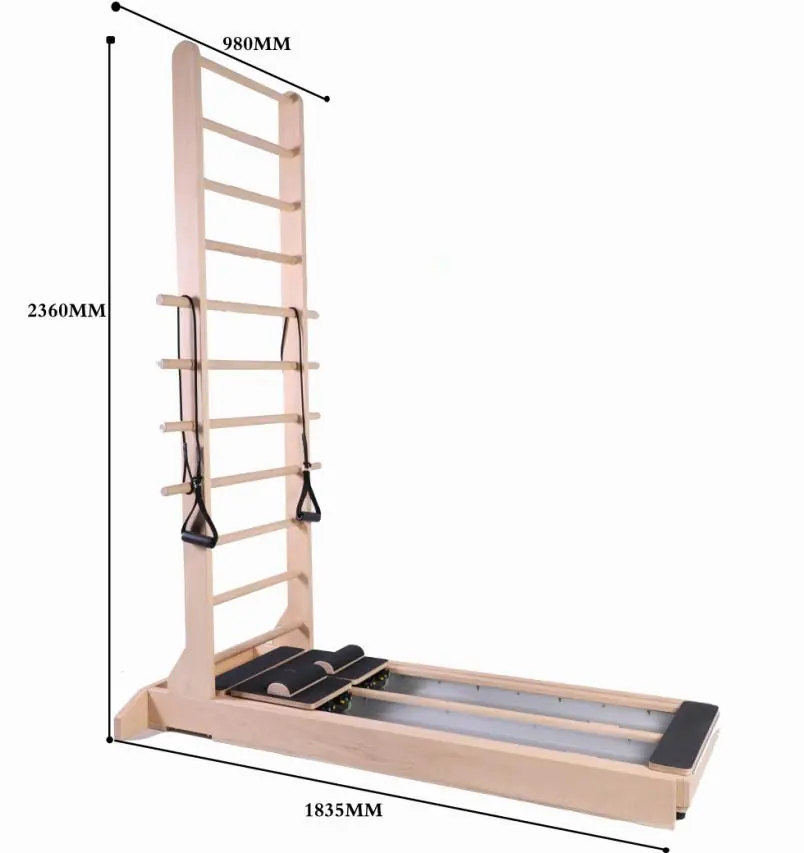

Au-delà des cinq modèles classiques : l’Ladder Bede bidirectionnelle pour la rééducation à haut volume et l’ensemble (tour de rotation + tour à poulie) pour le travail tridimensionnel de la colonne vertébrale. Fabriqués sur commande à partir de la même plateforme en bois que le reste de la gamme.

Tous les modèles ci-dessous sont fabriqués sur commande sur le même établi. Comparez le bois, les dimensions, la disposition des ressorts et leur emplacement, puis indiquez-nous la référence : nous vous établirons un devis pour ce modèle.
Les prix sont indiqués par commande — les tarifs destinés aux agents ne sont pas publiés. Envoyez-nous les références qui vous intéressent et nous vous répondrons avec un devis et un plan d'échantillonnage.
| Modèle | Code | Châssis / bois | Taille | Ressorts | Positionnement |
|---|---|---|---|---|---|
| Ladder Bed bidirectionnelle en érable blanc FAS | NIS101 | Érable blanc de qualité FAS | 1.84 × 0.945 × 2.34 m | — | Lit de rééducation |
| Ensemble de tours FAS en érable blanc (Classic) | NIS102 | Érable blanc + contreplaqué | 1650 × 590 × 900 mm de la coiffe des rotateurs 1980 × 1170 × 1990 mm de la tour à poulies |
— | Tour à poulie et rotateur |
Tous les modèles peuvent être personnalisés en termes de bois, de couleur de revêtement, de type de ressorts et d'emballage. Les dimensions indiquées correspondent à la version standard ; d'autres dimensions sont disponibles sur demande.
Ouverture ou agrandissement d'un studio : ensembles assortis de 5 pièces, livrés en une seule commande et un seul envoi.
Programmes de chargement de conteneurs avec votre propre numérotation des modèles et votre propre fiche technique.
Fabrication en marque de distributeur : votre logo sur la monture, vos choix de couleur et de cuir.
Ladder Barrel, Spine Corrector et le site bidirectionnel Ladder Bed à usage clinique.
Des lignes compactes en aluminium et pliables, idéales pour les espaces bien-être aux dimensions réduites.
Emballage et étiquetage adaptés au programme FBA pour les références destinées à l'Reformere grand public et les articles pliables.
Demandez dès aujourd'hui un devis personnalisé et des échantillons gratuits.
Contactez notre équipe